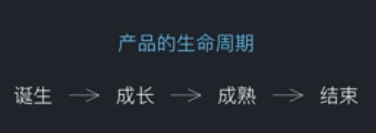
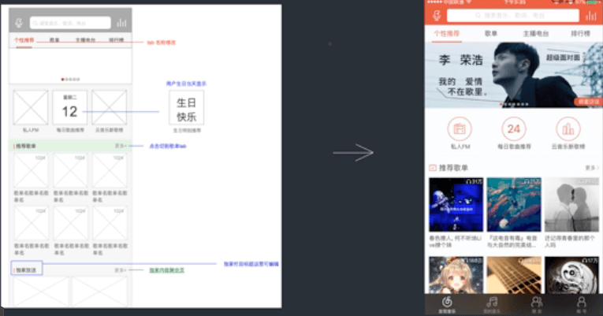

Table of Contents generated with DocToc
UI设计一般会包括以下四个方面的工作：风格定位、产品迭代、BANNER、专题活动。根据业务内容的不同，UI设计师还可以细分为：UI设计师和推广设计师。
风格定位的核心
分析用户的喜好，得出用户对产品的期望，最后设计出符合用户期望的产品。
风格定位的两个关键点
一般风格定位可以按照：分析->创作->筛选->规范->制作来做。
分析产品属性（工具性、娱乐性、大大众型等）、目标用户、竞争产品，最后得出产品的关键词，如：个性、简洁等。
根据分析后得出的关键词进行头脑风暴，创作出多个设计稿。例如下图就是LOFTER设计时的创作稿。
有条件做一下用户调研，从“创作”阶段中的方案选出一个最好的
前面三步确定产品风格之后，在这一步需要制作一套视觉规范，用于约束后面的设计不要受到干扰。规范基本上包括：色彩规范、图标规范、按钮规范、排版规范。
制作指的是具体页面的制作
下面我们可以看一下几个经典产品的风格定位思考：
LOFTER
网易云音乐

在产品的生命周期里，是需要不断进行产品迭代的，而在产品迭代过程中必定会涉及到界面的修改，这时候就需要UI设计师根据交互设计师的交互设计稿来设计具体的界面。

BANNER一般是用来宣传一个活动的图片。真正好的BANNER必须符合广告本身的意图。因此一个好的设计应该在了解传播意图的基础上，做出合适的设计，而不是只考虑自己的喜好。
电商类banner
lofter banner
music banner
可以看出不同类型的BANNER，其风格也不一样，这就需要设计师根据不同业务场景涉及不同风格的BANNER。BANNER设计一般都很简单，都是一个主题，一个标题。因此对于banner来说，配色和字体设计更为重要。
专题活动通常是指为了拉新、提高用户活跃度而做的一次专题活动，例如淘宝双十一活动、京东618活动等等。